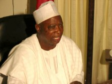

You are all aware by now of the tragic incident in Toto local government area during the state house of assembly elections last Saturday, May 3. The state Commissioner for Women Affairs and Social Development, Mrs. Joyce Maimuna Katai and 26 others were killed by Egbirra youths. I address you tonight with a heavy heart. Mrs. Katai was a loyal and dedicated commissioner. She was a detribalized woman and a great apostle of peace, particularly in her community. She worked tirelessly to bring Toto local government area back into government. She fought for the creation of new chiefdoms in the area. She preached peace, she worked for peace and she believed in peace and the unity of all ethnic groups in her local government area. It is a cruel irony of fate that a woman so committed to peace and unity among her people became the innocent victim of bloody-thirsty youths armed and funded by the anti-democratic forces in our state. Mrs. Katai had gone home to perform her civic duty as a responsible Nigerian when she was attacked by the Egbirra youths on the morning of May 3. She ran for her dear life to the police station for protection. The police hid her in the armoury but the heavily-armed youths broke down the door of the armoury. They dragged her out of the room and beat her to death right there at the police station. Her killers are callous and heartless. We shall miss her wit and humour as well as her valuable contributions in the cabinet. We commit her gentle soul to the almighty God. We mourn with her family and the families of the other victims of this needless violence.
Government will support her family in this their hour of need. Government has directed that an urgent census of the displaced persons be conducted to ascertain their number and their immediate needs. When this exercise is completed government will assist to rehabilitate and resettle them.
The anti-democratic forces that unleashed this unprovoked violence on Toto local government area have tested the will of this administration. Let the words echo in every home in the state: the will of this administration will prevail over the cowardly forces of disunity. This heinous crime will not go unpunished. Whoever is behind it, no matter how rich or powerful or influential will pay the price stipulated by the laws of the land for their evil deed. They have breached the damn of our restraint. They will drown in the flood of our just and justifiable anger.
Let us not for one moment think that this latest round of violence in Toto local government area was election violence, although it happened on election day. From all the available evidence, it was clearly premeditated. Election violence is usually a protest over election results. This was not the case. The attack began as early as eight o'clock in the morning even before the election started when heavily armed Egbirra youths attacked Gadabuke. They were repulsed. Three of them were arrested. Most of the killings, arson and the looting of the Gbagyi by Egbirra youths were carried out from nine o'clock in the night. They chose their victims deliberately and went after them, their homes and property.
It is painful to me that the apostles of violence in Toto local government area refuse to be persuaded that they and others have nothing to gain from unprovoked ethnic violence. A community in which there is no peace can expect neither unity nor progress. We hardly need to preach to the people of Toto local government area about this. In 1999, the military administration refused to conduct a local government election there because of the smouldering violence of 1997. We did not want the local government to continue to be isolated in the scheme of things. And that was why we took immediate steps towards the return to peace and harmony among the people as soon as we took over the affairs of this state on May 29, 1999. We succeeded in bringing the displaced Bassa people back to their ancestral homes on July 3, 2000. The nation and the world commended us for this singular achievement. It is sad that this foundation of unity was destroyed by those who stand to benefit most from the reign of peace in the area.
Their sinister objective is to falsely portray Nasarawa as a crisis-ridden state. They want to scare away foreign and local investors from the state and retard its development. They want to rubbish the achievements of this administration and set back the hands of the clock of our progress as a people. They will fail. We assure them that they will be the ultimate and sorry victims of their own violence and machinations against the state and its people.
The law enforcement agents have been given full powers to track down everyone of these evil men. They will fish them out from their hiding places and be made to account for their conduct before the laws of the land. We appeal to you all to remain calm but vigilant. Individuals were the victims of their violence but their crime is against the entire state and all of us. Individuals, no matter their pain and loss, must not try to settle scores with them. That would amount to taking the law into their own hands. As law-abiding citizens, we must let the law enforcement agents do their job and let the law take its course. We repeat: this evil deed will not go unpunished.
In spite of what happened last Saturday, the people of this state must be commended for the conduct and the outcome of the general elections. We fully discharged our civic duty without let or hindrance. Freely we went to the polls and freely we expressed our individual preferences for the candidates of the various political parties. The sum of our individual preferences is our collective verdict in each of the elections. Our great party, the Peoples Democratic Party, PDP, enjoys overwhelming support in the state, as indeed it does nation-wide. PDP did not even leave room for a distant second place for another party in all the elections in the state. It swept all the seats in the national assembly elections, gave its overwhelming support to the presidential and governorship candidates of the party. The party also dominated in the state house of assembly poll. PDP has left the other political parties gasping for continued political relevance in the land. There is no greater evidence than this that PDP is truly the party of the people, by the people and for the people of Nasarawa State.
We thank the Almighty Allah who made our victory possible. Election 2003 was a litmus test of our democratic credentials. We have not disappointed those who prayed for a successful conduct of the elections in our country.
The good people of Nasarawa State have willingly renewed my mandate as their chief steward. Tonight, it is with humility and gratitude that I most sincerely thank them for their gift of a lifetime. Our people made the right choice in each of the elections. They rejected the glittering but empty promises of the candidates of the other political parties who believe in magic. They told them that they have no room for politics of self-aggrandizement that benefits the few and leaves the many short-changed. We have no room in this state to accommodate the prophets of doom and the apostles of politics with bitterness.
When our elected representatives assume office, we must all support them so they can best serve our collective interests. Our party's people-oriented policies and programmes were thoughtfully conceived by the party leadership to free our dear country from the shackles of under-development. We will continue to vigorously execute these policies and programmes in the state.
We say a special thank you to the PDP leadership in the state. Their commitment to the party and their hard work certainly made it the overwhelming choice of our people. We say a big thank you to the members of our great party for not only remaining resolute in their support for our party but also conducting themselves with decorum in the face of needless provocation. We salute the officials of the Independent National Electoral Commission, INEC, for their dedication to duty. Their task was onerous but they carried it out without fear or favour. The police and the other security agencies ensured peace and free conduct of the elections. Thanks to them, the prophets of doom have been denied the pleasure of chuckling over their own evil wishes for the nation. They deserve special commendation for a job well done. Our revered royal fathers played a fatherly role in ensuring that peace prevailed through the trying times of electioneering campaigns and the elections. We cannot thank them enough for being the pillars of peace and the symbol of unity in the state.
We accept the renewal of our mandate with humility and a deep sense of committed service to the state and our dear people. The people's decision to renew our mandate was most certainly informed by their kind appreciation of our modest contributions to the comprehensive development of the state in the past four years. The people want us to do more. We will. We accept the challenge with renewed vigour and dedication. We will continue to carry everyone along in our all people-oriented programmes and policies. We will not shirk our duty to God, the people and our conscience. Our challenge is to take the state to greater heights. Our promise is, insha Allah, we will not fail the people.
With the elections now behind us, electioneering campaigns and the struggle for power are over too. All political leaders and their supporters in the state must come together so that together, we shall work for the rapid development of our state. We extend our hand of brotherhood to the leaders, candidates and supporters of the other political parties in the state. We ask them to join us in moving the state forward. Our government is not a government of the few for the many, but the government of all the people for all the people of Nasarawa State. We have enough room on the deck for the hands of everyone in the state. The interest of our state must matter more to us than our party platform.
Pockets of protests greeted the outcome of the elections nation-wide. This should not unduly disturb us. Such protests of election rigging and claims of victory are not unusual in elections in many developing countries. But, as Nigerians, we must take serious objection to those who are trying to incite the public against the federal government. As leaders in their own right, we expect them to express their disappointment with a sense of public duty and responsibility. Nothing excuses their attempts to whip up primordial fears and sentiments.
The laws of the land provide adequately for the redress of grievances arising from the conduct and the results of the elections. Let the aggrieved avail themselves of this legal process. We must not allow them to preach and promote anarchy in the country because we would all be the losers. Unfortunately, it is becoming increasingly clear that these people are playing their script. Before the general elections, when it was clear to them that they would lose to the incumbent president, they advocated for an interim government at the centre. Their push for this strange anomaly gave away their game. Now they are asking for a government of national unity. We do sympathise with their desire to remain relevant but they are clearly going about it the wrong way.
All of us who sought for elective offices willingly submitted ourselves to the wisdom of the people. We agreed to abide by their decision. In each and every election the people expressed their decision through the ballot box. None of us expected their decision to favour all of us. We knew, long before the first vote was cast, that many of us were called but only a few of us would be chosen. The Nigerian electorate has chosen the few. We are bound by their decision. It is unpardonable arrogance for the losers to reject the decision of the people because it does not favour them. We cannot pretend to be democrats and yet refuse to abide by the decision of the electorate by whose will, political power is given and political power is taken away. Let those whose fortune did not shine at the polls quit whining and whimpering and join the winners in charting a new course for the nation and the people. That is the path of honour and selfless leadership. And that is what Nigeria expects from them.
Despite the manipulated protests, the fact remains that we have successfully conducted a civilian-to-civilian transition. We have collectively put our democracy through the crucible of the ballot box. It has come out a refined, precious metal that we all must continue to guard jealously. All of us, whether or not we are the choice of the people this time around, helped to make this peaceful and commendable transition possible in the face of misgivings. We must do nothing to rubbish this wonderful achievement by all Nigerians.
When the story of these times are written in the annals of our national history, the role played by the people of this state to stabilise our democracy must find pride of place. Our support for the re-election of President Olusegun Obasanjo was grounded in our commitment to the sustenance of democracy in our country and not out of a desire for self-promotion or personal gain. We are gratified that we have been proved right. If the cynical attempts to stop Chief Obasanjo from presenting himself for re-election had succeeded, our fledgling democracy would have suffered a fatal blow. And we would all be the losers.
Nasarawa is a small and poor rural state. But today, it has become a poor, small state with a big, rich voice in our national affairs. The state is beginning to play a central role in geo-political and national politics. This is not by accident. It is by the design of man and nature. Our state is located in the north-central zone. It must be the glue that holds the nation together. It must keep its head when all other geo-political zones are losing theirs. It must be the loud voice of sanity when the nation is threatened with the shrill cry of insanity. It must remain the beacon of patriotism when the political horizon is threatened with the dark clouds of ethnic or religious jingoism. We, in this state, must live by the example set by the late Premier of the then Northern Region, Sir Ahmadu Bello, and Sardaunan Sokoto. He made the Northern Region the centre of Nigerian politics. He did not want the north to be isolated from national affairs. He could have dragged religion and ethnicity into his political struggle. He did not. He was and remains an authentic northern hero for political philosophy and his personal principles. It is a sad commentary in these times that those who purport to look up to him do not understand his method and his political philosophy. They invoke the great man's name when it suits their purposes.
We would like to warn that it is dangerous to play with the naked fire of ethnic or religious politics. And those of them who are playing with this fire will be the first to be consumed by it.
My dear people of Nasarawa State, our state has come a long way. Our administration will remain purposeful and committed to the best for the people of this state. We repeat that we do not have a monopoly of wisdom. The challenges facing us are still enormous. In the past four years, we have systematically taken up these challenges. Our job is not done until we reach the Promised Land. Every one of you in this state has a moral obligation to place his knowledge and expertise in every field of human endeavour at the disposal of the administration. Let us stop moaning the circumstances of our electoral misfortunes. We cannot build the future with shards of a broken pot. Nasarawa is our state. Its fate is in our hands. We owe future generations in the state the moral obligation to hand over to them a modern, united, focused and prosperous state. Let us continue with the task of building our dear state on the foundation laid by this administration.
Thank you and good night.